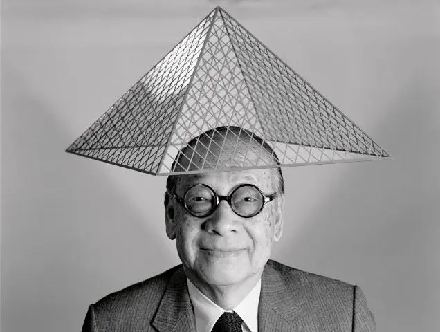

I. M. Pei
I. M. PERIAL
Ieoh Ming Pei, plus connu sous le nom d'I. M. Pei, était un architecte sino-américain de renom, né le 26 avril 1917 à Canton, en Chine, et décédé le 16 mai 2019. Sa carrière exceptionnelle a laissé une empreinte indélébile sur le paysage architectural mondial. Pei a étudié l'architecture à l'Université de Pennsylvanie, puis à l'école d'architecture du MIT, avant de rejoindre l'Harvard Graduate School of Design pour sa maîtrise. Son travail initial a été influencé par Walter Gropius et Marcel Breuer du mouvement Bauhaus, mais il a rapidement développé un style distinctif qui a fusionné l'élégance moderne avec des éléments traditionnels.
Son approche était marquée par une recherche d'harmonie entre la forme, la lumière et les matériaux. Pei était reconnu pour ses conceptions audacieuses, incorporant souvent des formes géométriques saisissantes et des jeux de lumière qui donnaient vie à ses structures. Parmi ses œuvres les plus emblématiques, on trouve la pyramide du Louvre à Paris, un chef-d'œuvre controversé à l'époque mais devenu un symbole emblématique de la fusion entre l'architecture moderne et le patrimoine historique. Il a également conçu la John F. Kennedy Library à Boston, la Bank of China Tower à Hong Kong, et la East Building de la National Gallery of Art à Washington, D.C., entre autres.
Au-delà de ses créations architecturales, I. M. Pei a été récompensé par de nombreux prix prestigieux, dont le prix Pritzker en 1983, considéré comme le Nobel de l'architecture. Son héritage durable réside dans la vision novatrice qu'il a apportée à chaque projet, alliant fonctionnalité, esthétique et innovation pour façonner des espaces qui continuent d'inspirer et de fasciner les générations actuelles et futures.